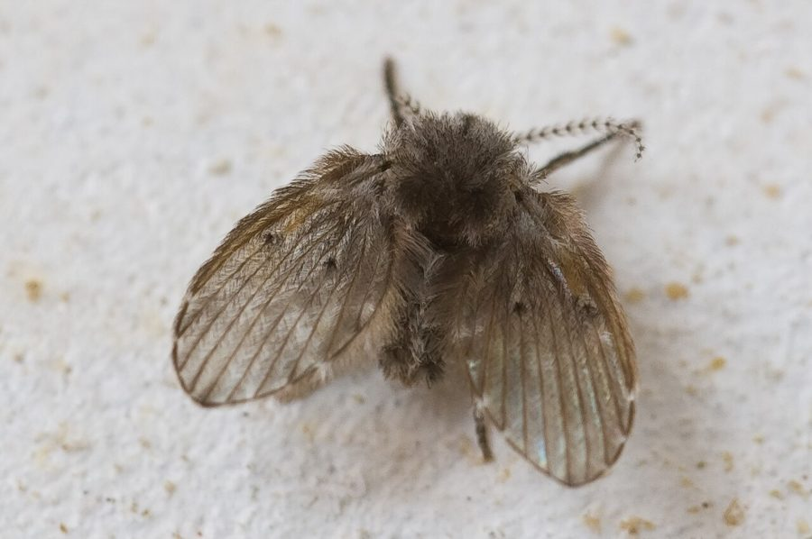

नाली की मक्खीDrain Fly
Clogmia albipunctatus · Psychodidae · INS-0173

- Scientific name वैज्ञानिक नाम
- Clogmia albipunctatus (Wiedemann, 1817)
- Family कुल
- Psychodidae
- Hindi हिंदी
- नाली की मक्खी
- Local names स्थानीय नाम
- nali ki makkhi, drain fly, moth fly
- Status here यहाँ की स्थिति
- native
- Movement आवागमन
- Resident, here all year
- Known from कहाँ दर्ज
- Others have published records from the wider Awadh–Purvanchal plain, none yet from Basti–Ayodhya अवध–पूर्वांचल से दूसरों के प्रकाशित अभिलेख, बस्ती–अयोध्या से अभी नहीं
- IUCN IUCN
- not evaluated
- Review समीक्षा
- audited and independently read
When to look कब देखें
Present all year. साल भर मौजूद।
नाली की मक्खी / Drain Fly
Clogmia albipunctatus (Wiedemann, 1817) — Psychodidae
नाली की मक्खी — घर की नाली, बाथरूम, रसोई के नल से निकली छोटी, काली पतंगा जैसी मक्खी। इसका लार्वा गंदे पानी, नाली के कीचड़, सड़े पत्तों में रहता है। नल के पास, नहा-धोने की जगह पर यह बैठी दिखती है। दुनिया भर में घरों में पाई जाती है।
Quick Identification त्वरित पहचान
| Feature | Description |
|---|---|
| Size | 2–3 mm long; wingspan 4–5 mm |
| Colour | Dark brown or blackish; hairy, moth-like |
| Wings | Held roof-like over body; fuzzy, hairy, not transparent |
| Body | Hairy, robust; short legs |
| Head | Small, large antennae relative to body |
| Habitat | Around drains, wet sinks, bathrooms |
Field tip: Look around bathtub drains, sink drains, and wet areas of kitchens and bathrooms. The flies are tiny, dark, and hairy, resting on walls and tiles near water. They are poor fliers and move sluggishly. Found even in clean homes with plumbing that is not regularly cleared.
हिंदी — कैसे पहचानें: नल के पास, नाली के पास छोटी-सी काली पतंगा। पंख रोएँदार। बहुत धीरे-धीरे उड़ती है।
Morphology आकारिकिकी
Biometrics:
| Measurement | Range |
|---|---|
| Adult body length | 2.0–3.0 mm |
| Wingspan | 4–5 mm |
| Wing length | 2.5–3.5 mm |
| Larval body length | 3–8 mm |
Adult: Small, dark fly resembling a tiny moth. The body is covered with fine hair. Antennae are long and segmented, with whorls of setae giving them a feathery appearance (particularly in males). Compound eyes are large and dark. The wings are membranous, held tent-like or roof-like over the body when at rest. The wing margins are fringed with microtrichia, giving a fuzzy appearance. Wings lack the venation detail of many other flies; veins are simple and few. Legs are short, dark, and moderately hairy.
Larvae: Whitish or pale brown, cylindrical, 3–8 mm long. The head is small and retractable. Two spiracular tubes (posterior respiratory filaments) are present, helping the larva extract oxygen from biofilm. The body is segmented, with bristles and hairs. Larvae are found within gelatinous biofilm in drains.
Sexual dimorphism: Males have more elaborate antennae with longer setae than females; males are slightly smaller.
Behaviour & Ecology व्यवहार और पारिस्थितिकता
A synanthropic (human-associated) fly found in damp buildings worldwide. Adults are attracted to moisture and congregate around drains, wet sinks, and bathrooms. They rest on walls and tiles near water sources. Flies are weak fliers and do not venture far from their larval habitat. Both males and females feed on organic matter and moisture in the air or on surfaces. They are nocturnal and become active at dusk.
Larvae are aquatic detritivores living in the gelatinous biofilm that accumulates inside drains and pipes. The biofilm consists of bacteria, fungi, and organic debris. Larvae feed by scraping and consuming this biofilm. A single drain can support hundreds or thousands of larvae. The presence of drain flies in a home indicates that biofilm is accumulating in plumbing — a sign of slow drains or infrequent water flow.
हिंदी: नाली की गंदगी में लार्वा रहता है। पानी का प्रवाह अगर धीमा हो तो नाली में ये कीड़े आ जाते हैं। दीवार पर बैठी रहती है।
Life Cycle / Phenology जीवन चक्र
| Stage | Duration |
|---|---|
| Egg | 1–3 days |
| Larva (multiple instars, usually 3) | 8–15 days |
| Pupa | 1–3 days |
| Adult lifespan | 2–3 weeks |
| Egg-to-adult | 10–25 days under warm conditions |
Temperature dependence: Development is fastest at 22–26°C. At lower temperatures, development slows. No dormancy; continuous generation of flies occurs indoors.
Reproduction: Females lay small batches of 20–50 eggs on the surface of biofilm in drains. Males mate with females; mating takes place in or near the breeding habitat. A single female can produce hundreds of offspring in her lifetime.
Host Plants or Prey आहार
Larval food:
- Biofilm: mixture of bacteria, fungi, and organic detritus in drains and pipes
- Decomposing organic matter: food scraps, grease, hair, skin cells
- Fungi and algae: growing in moist environments
Adult food:
- Moisture in air (may feed on atmospheric water vapour)
- Organic matter on wet surfaces
- Reproductive fluids
Feeding: Larvae scrape biofilm from the walls of pipes; adults may feed on moisture and organic matter near sources of standing water.
Predators / Natural Enemies शत्रु
- Predatory flies: Robber flies and other dipteran predators may attack adults
- Spiders: Small hunting spiders prey on adults
- Parasitoid wasps: Small parasitoids may attack larvae and pupae
- Predatory mites: May feed on eggs and early larval stages
Agricultural / Human Relevance कृषि प्रासंगिकता
Household nuisance. The Drain Fly is a cosmopolitan pest of homes and buildings. The presence of adults is a nuisance, particularly in bathrooms and kitchens. While the flies do not transmit disease, they are indicators of poor drainage and biofilm accumulation in plumbing. In hospitals and food-service establishments, the flies may be vectors for bacteria picked up from drains. The flies cannot be controlled by simple insecticide spraying; the problem is fundamentally one of drain hygiene.
Management. Effective control requires cleaning of plumbing and removal of biofilm from drains. Methods include:
- Mechanical cleaning: use of drain snakes or high-pressure water to remove biofilm
- Chemical treatment: application of caustic drain cleaners or enzyme-based cleaners
- Regular flushing: frequent water flow through drains to prevent biofilm accumulation
- Proper drainage: ensuring that pipes slope correctly and water does not stagnate
Insecticide application alone is ineffective if the biofilm is not removed.
हिंदी: नाली की गंदगी से आता है। नाली को साफ़ करना ही इसका इलाज है। सिर्फ़ दवा से नहीं जाएगा, बिना कीचड़ साफ़ किए।
Expected Locally स्थानीय रूप से अपेक्षित
Not a field record. Written from published accounts for eastern Uttar Pradesh. No confirmed local sighting yet — if you have seen it, that is what the atlas needs.
अभी तक स्थानीय पुष्टि नहीं। यह विवरण प्रकाशित स्रोतों से है, किसी अवलोकन से नहीं।
Expected in bathrooms and kitchens throughout Basti district and eastern UP. The presence of the fly indicates slow-draining plumbing or biofilm accumulation. A specimen collected from a drain or bathroom with date and location would confirm a local record.
Distribution वितरण
Global range: Cosmopolitan; found in buildings on all inhabited continents except Antarctica.
In India: Present in all states; common in urban and semi-urban areas wherever plumbing exists.
In Uttar Pradesh: Present in all cities and towns with indoor plumbing.
In Basti district / eastern UP: Expected in all buildings with bathrooms and kitchens, particularly where plumbing is slow or biofilm accumulates.
Research Questions शोध प्रश्न
- What rate of water flow through a drain is necessary to prevent biofilm accumulation and drain fly breeding? / एक नाली को कितना पानी बहना चाहिए कि इसमें इस कीड़े का लार्वा न हो सके? — Maintain drains at different flow rates; monitor larval presence.
- How effective are enzyme-based drain cleaners versus chemical drain cleaners in eliminating drain fly larvae and biofilm? — Compare treatment methods; record efficacy and larval survival.
- Does the species show a preference for any particular type of biofilm (bacterial, fungal, mixed)? — Culture drains with different microbiome compositions; measure larval abundance.
- How many generations of drain flies can develop in a drain during a single summer season? / गर्मी के मौसम में एक नाली से कितनी पीढ़ियाँ आ सकती हैं? — Monitor a single drain throughout the warm months; count pupation events.
- Can introduction of predatory mites or parasitoid wasps provide biological control of drain flies in buildings? — Release natural enemies in selected buildings; monitor population changes.
Similar Species मिलती-जुलती प्रजातियाँ
| Species | How to tell apart | हिंदी |
|---|---|---|
| Psychoda alternata (Sink Fly) | Larger (3–4 mm), different wing venation, antennae less densely setose | थोड़ा बड़ा |
| Other Psychodidae | Variable; identification often requires microscopic examination | अलग-अलग नाली की मक्खियाँ |
| Fungus gnats (Sciaridae) | Smaller, thinner legs, different habitat (associated with soil and fungi), different head shape | बहुत छोटी, अलग दिख |
Field rule: Tiny (2–3 mm), dark, hairy fly held with wings tent-like over body, found around drain openings and wet areas: Drain Fly.
Taxonomy & Classification वर्गीकरण
Original description. Described by Wiedemann in 1817 as Psychoda albipunctatus. The genus Clogmia was erected later; Clogmia albipunctatus is the type species of the genus.
Subspecies. Monotypic; no subspecies are recognised.
Family and order placement. Order Diptera (flies), family Psychodidae (drain flies, moth flies, and sand flies). Psychodidae are ancient dipterans with fossil records extending to the Jurassic.
Phylogenetic notes. Clogmia is a small genus of four or five species, all associated with drains and moist habitats in buildings. Recent molecular work indicates that C. albipunctatus may represent a cryptic species complex, but formal revision is pending.
IUCN status rationale. Not evaluated. A common household pest of no conservation concern.
Photo Gallery फोटो गैलरी
Photos needed आवश्यक फोटो
- [ ] Adult flies on a wet tile or wall (मक्खियाँ)
- [ ] Drain opening with flies nearby (नाली के पास कीड़े)
- [ ] Larval habitat (biofilm in drain) (लार्वा का घर)
No photos yet — add field photos to media/species/drain_fly/ and run node scripts/sync_photos.js.
References संदर्भ
- Wiedemann, C.R.W. (1817). Diptera exotica. Zoologische Analekten 1: 17–28.
- Brues, C.T., Melander, A.L. & Carpenter, F.M. (1954). Classification of Insects. 2nd edn. Bulletin of the Museum of Comparative Zoology 108.
- Wood, D.M. (1991). Diptera (flies). Immature insects 2: 51–188. Kendall/Hunt, Dubuque, Iowa.
- Guzman, D.S.M. & Koutsos, E.A. (2015). The Exotic Animal Medicine Manual for the Veterinary Technician. Cengage Learning.
- Majumder, R., Saha, R. & Bera, S. (2012). Drain flies as a vehicle of nosocomial pathogens. Indian Journal of Medical Microbiology 30(3): 335–340.
- GBIF Occurrence Data — Clogmia albipunctatus, Asia (2024).
Source file: species/fauna/insects/drain_fly.md